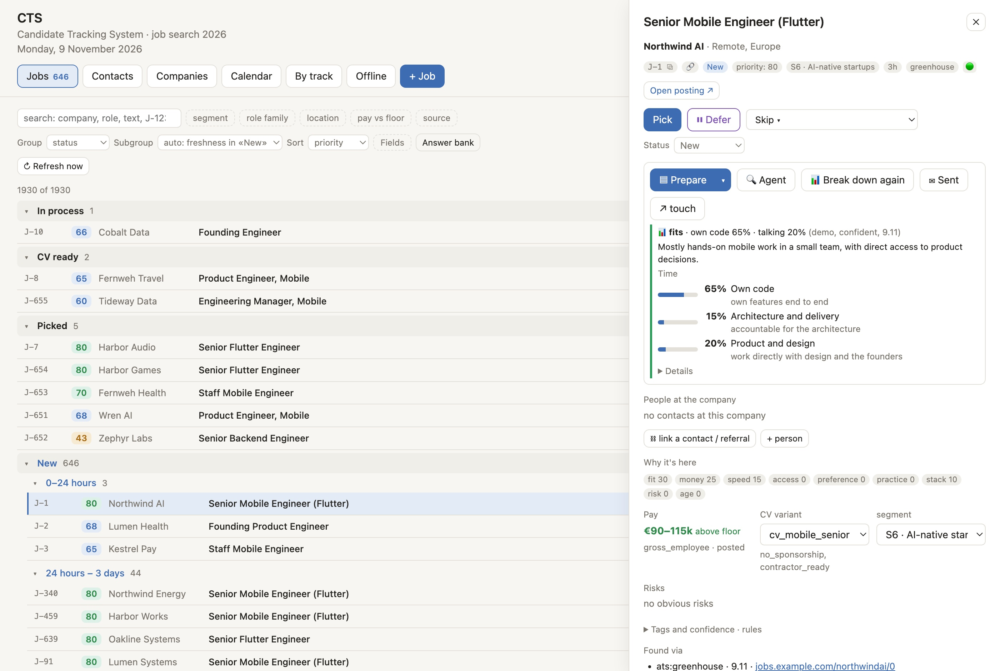

CTS: the system behind my job search
I built this for myself when I started looking for my next role in October 2026. It is one place for the whole search: which openings exist, which are worth my time, who I know there, what I have to do today, and what happened next.

The problem
A job search is several jobs at once. Openings are spread across hundreds of career pages, job boards, messengers and specialised channels, and most of them do not fit. Contacts, follow-ups, events and deadlines live somewhere else. I wanted a single system, with the reasoning behind every suggestion visible.
What it does
Market monitoring
- Polls company career pages every hour through 18 connectors (Greenhouse, Ashby, Lever, Workday and others), plus many other sources: job boards, messengers and specialised channels.
- Reads job alert emails through the Gmail API, with read-only access.
- Merges the same role from different sources into one card and traces a job board repost back to the employer's own posting when possible.
- Notices when a posting disappears from the employer's site and closes the card.
Scoring and triage
- A rules engine tags each opening by role, location, pay, stack and company type, applies hard filters, and shows why it got its score.
- An LLM fills in only the fields that rules could not settle.
- A breakdown estimates from the posting how much of the role is hands-on code and how much is conversation, and with whom.
- Decisions take one click: pick, defer with a reminder, or skip with a reason.
Applications
- A CV builder assembles each CV from a library of approved blocks, checks it with a linter and renders a text-based PDF.
- An answer bank keeps consistent replies to common application questions.
- A funnel from new opening to offer, with a timeline for each job, time in each stage and days to first reply.
- Sending an application schedules its follow-up automatically, and long silence is flagged.
Networking
- People are a funnel of their own, from first contact to someone who would refer me.
- Every touch is logged by channel and purpose, and people are linked to companies and openings.
- Each contact has a next step with a date, which becomes a task in the plan.
Companies
- A registry of the companies I watch, each with its open roles, people, history and hiring activity over time.
Events
- An offline tab lists meetups and conferences by week, from idea to registered to attended.
- Each event has a usefulness rating, price, registration link and deadline, and notes on who I met.
Tasks and calendar
- A task tracker with numbered tasks, tracks, deadlines and checkpoints.
- A calendar of tasks and events, a view of what is due today or overdue, and daily habits with streaks.
- Follow-ups, next steps and interviews from the rest of the system land here on their own.
Everyday use
- The interface works in English and Russian.
- Available from my iPad over a private network, with no public address.
Technology
| Backend | Python 3 standard library only: ThreadingHTTPServer and a JSON API |
|---|---|
| Data | SQLite in WAL mode, with append-only logs and daily backups |
| Frontend | Plain JavaScript, HTML and CSS, with no framework or build step |
| Scheduling | macOS launchd: market checks every hour, email every 10 minutes |
| AI | Claude through the Claude Code CLI, with strict JSON schemas and a budget cap on each call |
| Integrations | Public ATS APIs, Gmail API, messenger channels |
| Headless Chrome | |
| Remote access | Tailscale |
| Quality | 366 automated tests with unittest, Git |
How I built it
It was running on day two and took shape within a week, built with AI coding agents, mainly Claude Code. My part was deciding what to build, setting the architecture, checking results against real data and changing the rules when they were wrong. Whenever a score looked off, I recorded the case, found the cause and fixed the rule behind it.
It runs only on my own computer. It has no other users and the code is private, because it holds my personal data.